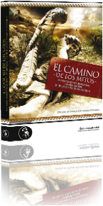
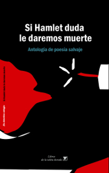
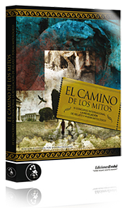
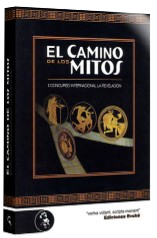

Los libros consignados en esta página incluyen textos de mi autoría. Algunos fueron publicados en la Argentina, otros en España. A menos que se indique lo contrario, todos están disponibles en librerías o pueden comprarse por Internet; alguno ya no se consigue pero se incluye como referencia histórica. Uno es (también) todo lo que ha escrito.
Compilación de los ganadores del cuarto concurso de "La Revelación" de Ediciones Evohé, editada en España. Incluye mi cuento "Abajo, para siempre", que se alzó con el segundo premio.
El camino de los mitos IV (2011)

Si Hamlet duda le daremos muerte (2010)

Una "antología de poesía salvaje" editada por Libros de la Talita Dorada, bajo la dirección de Julián Axat. Incluye mis poemas "Insight/Feeling", "Wheels", "Ahí, ahí", "Manifiesto" y "Sobre la ceguera".
» Versión digital, de acceso gratuito
» Reseña en el suplemento Radar libros del domingo 20 de marzo de 2011
» Reseña en el suplemento ADNcultura del viernes 14 de enero de 2011
» Mención en la lista de Los mejores libros de 2010 del diario Los Andes, 2 de enero de 2011
» Reseña en la revista La Tecl@ Eñe de febrero de 2011
» Una columna de Juan Terranova en Hipercrítico
» Mi crónica sobre el curioso incidente de la guillotina el jueves por la noche
» Textos de Fernando Alfón sobre el mismo tema: 1, 2 y 3
» Una respuesta de Nicolás Prividera, autor también incluido en SHDLDM
» Mi crónica sobre la presentación en la ex ESMA
» Un texto de Leandro Andrini sobre algo que conté allí
» Discusión en el blog de Irene Gruss a partir de una columna de Diego Erlan en ñ
» Entrevista a Fabián Casas en el diario Página/12, 3 de octubre de 2011
Compilación de los ganadores del tercer concurso de "La Revelación" de Ediciones Evohé, editada en España. Incluye mi cuento "H", que se alzó con el quinto premio.
El camino de los mitos III (2010)

El camino de los mitos I (2008)

Compilación de los ganadores del primer concurso "La Revelación" de Ediciones Evohé, editada en España. Incluye mi cuento "Fábula Cero", que ganó el segundo premio ex æquo con "Gorgona", de otro platense, Guillermo Pilía.
Incluye mis poemas "Así que juguemos", "Repaso" y otro sin título. Es una selección de los textos producidos en el taller literario CIA (Creación, Integración y Arte), que coordinaba Laura Coronel en Lomas de Zamora.
Caja de fuego (1998)
Concurso Jóvenes Creadores (1997)
Incluye mi cuento "Barranca Yaco", previsiblemente basado en la muerte de Facundo Quiroga. Ese texto se alzó con la primera mención en el concurso, organizado por la Secretaría de Desarrollo Social de la Nación. Fue mi primera publicación en libro y ni siquiera yo tengo un ejemplar. O, mejor dicho, creo que ni siquiera yo tengo un ejemplar; tendría que buscar bien.


{kind=link}